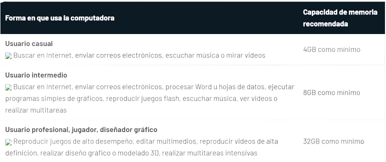
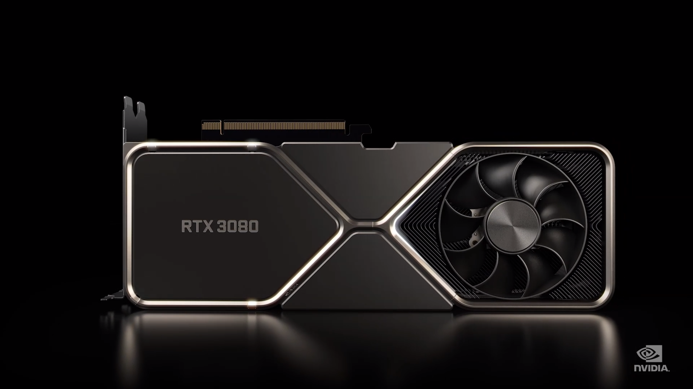

COMPONENTES DE UNA PC
MEMORIA RAM
¿Qué es?
La memoria de la computadora, o RAM (RAM), es el almacenamiento a corto plazo de su sistema. Almacena datos que su computadora está usando activamente para que pueda acceder a ellos rápidamente. Cuantos más programas tenga en su sistema, más memoria necesitará.
TIPOS DE MEMORIA RAM
DDR-SDRAM (DRAM síncrona de doble velocidad de datos)
Un tipo avanzado de SDRAM que puede transferir el doble de memoria por ciclo de reloj. La memoria DDR SDRAM también puede llamarse SDRAM II o DDRAM.
SDRAM (RAM dinámica síncrona)
Este tipo está disponible en paquetes SIMM y DIMM y viene en dos configuraciones:
Memoria sin paridad (también conocida como RAM sin ECC). Esto suele ser más barato que la memoria de paridad
Parity RAM (también conocida como ECC RAM) Normalmente se usa en aplicaciones de uso intensivo de datos, como grandes hojas de cálculo y bases de datos. La RAM de paridad
incluye circuitos adicionales para ayudar a minimizar los errores específicos de la RAM. La RAM con paridad
y la RAM sin paridad generalmente son incompatibles.
RDRAM (RAM directa de Rambus)
Rambus, Inc. RDRAM, el sucesor de rendimiento de SDRAM desarrollado, solo está disponible en paquetes DEM.
MEMORIA RAM PARA TIPOS DE USUARIOS
La memoria ram es distintas deacuerdo al tipo de usuario existen aquellos que usan la computadora basicamente,otros a nivel escolar,profesional,especializadas en vidjuegos o diseño grafico a continuación un ejemplo:
Gabinete

¿Qué es?
El gabinete es el armazón o cascarón que contiene los principales componentes de hardware de una computadora: como CPU, tarjeta madre, microprocesador, memoria, disco rígido y unidades internas (lector de CD o DVD, etc.). La principal función del gabinete es proteger a dichos componentes.
CARACTERISTICAS
Espacio interno: debido a la forma en que se distribuye el espacio de la red, la carcasa para PC es clave para promover una buena ubicación de los componentes. Esta es una cuestión clave en términos de enfriamiento y, por lo tanto, de mejora del dispositivo.
Gestión de cables: los cables son necesarios para realizar conexiones entre los componentes, y la carcasa de la computadora le permite dividir y colocar estos cables en lugares estratégicos para que queden fuera de la vista, fuera del camino y más convenientes.
Compatibilidad
En algunos casos, las carcasas de los ordenadores son compatibles con placas ATX y MIcroATX, y este tema no debe pasarse por alto porque puede ser decisivo.
Flujo de aire y enfriamiento: los gabinetes casi siempre tienen ventiladores frontales que atraen aire frío a la CPU. Lo mismo sucede para eliminar el aire caliente en la parte posterior.
Conectores frontales
: los conectores que ya están cableados para funcionar con la placa base generalmente se encuentran en el frente. Puede utilizar estos puertos en función de las necesidades del usuario.
Ranuras para discos duros o ópticos: esto no es un problema en estos días y, de hecho, casi todas las carcasas de las computadoras ya tienen estas ranuras para discos duros de 2,5 y 3,5 pulgadas.
TIPOS DE GABINETES

TARJETA GRAFICA
¿Qué es?
La tarjeta gráfica o tarjeta de vídeo de un componente que viene integrado en la placa base del computador o se instala a parte para ampliar sus capacidades. Ciertamente, esta tarjeta está dedicada al procesamiento de datos relacionados con el vídeo y las imágenes que se están reproduciendo en el computador.
CARACTERISTICAS
Las principales características de la tarjeta gráfica son las siguientes:
Procesador gráfico. Se denomina GPU (Unidad de Procesamiento Gráfico), que se encarga de procesar todos los datos gráficos y realiza los cálculos necesarios para obtener la imagen final. Al igual que el procesador de su computadora, el procesador de su tarjeta gráfica funciona a una velocidad fija, o frecuencia de reloj, expresada en gigahercios (hasta 5,5 GHz). Para evitar el deterioro por calentamiento, deben enfriarse con disipadores de calor, generalmente complementados con un pequeño ventilador.
Memoria gráfica. Esta es una memoria de tipo RAM que almacena una gran cantidad de datos gráficos que la GPU necesita procesar. La segunda parte de los datos gráficos mencionados se pueden almacenar en la memoria RAM de la placa base y la tarjeta debe acceder a ella a través del puente norte. La memoria gráfica se caracteriza por su capacidad (expresada en megabytes), velocidad de funcionamiento (expresada en MHz) y tipo (DDR, DDR2, GDDR3). Las tarjetas de hoy tienen un tamaño increíble de
GB y operan en frecuencias alrededor de 1000 MHz. El tipo GDDR5 es el último y más rápido.
Tipo de conexión (conexión a la placa base). Hay dos tipos de conexiones:
a) AGP 8X. Esta es la última versión del bus AGP, con un ancho de banda de 2 Gb/s en el sentido de la placa base y 266 → MB/s en el sentido contrario (2,26 Gb/s en total).
b) PCI Express 16X. Es el último sistema de bus de tarjetas gráficas con un ancho de banda de
Gb/s en ambas direcciones (8 Gb/s en total). Es más rápido que el sistema AGP.

TIPOS DE TARJETAS GRAFICAS
Modelos de tarjetas de video por integración:
Discreto. Son más comunes en las computadoras de escritorio. Se conectan directamente a la placa base a través de un puerto de expansión. También es habitual encontrar configuraciones multitarjeta como las que consigues gracias a SLI o Cross Fire.
Integrado en la placa base. Muy habituales en portátiles y netbooks, las funciones ahora nos las da el chip de la placa base, y aunque pueden contener algo de memoria, suelen utilizar la memoria RAM del ordenador.
Integrado en el procesador. Se encuentran en las nuevas microcomputadoras que usan la memoria RAM de la computadora. Está claro que esto es el futuro, pero estamos en los primeros pasos de esta tecnología.
Modelos según cable de conexión del monitor:
VGA. Desarrollado por IBM. Muy sensible tanto a la interferencia como a la longitud del cable. Su mayor desventaja es que no incluye señal de audio. Necesita un cable adicional para conectarlo a su televisor y ver videos o películas.
DVI. El primer estándar de computadora completamente digital. Esto lo hace más inmune a las interferencias. Existen varios enchufes con este nombre, con diferentes características, y algunos de ellos incluso son capaces de transmitir sonido.
HDMI. Las pantallas de mayor resolución requieren un conector que pueda transmitir la señal sin perder calidad. En este caso, la señal de audio está incluida. Puerto de visualización
Puede contener audio y video. Se puede usar para conectar múltiples pantallas y contiene señales 3D estereoscópicas, que son solo dos señales, una diferente para cada ojo, para crear un efecto tridimensional.
Trueno. Thunderbolt se basa en Displayport, específicamente Mini DisplayPort. Puede conectar dispositivos PCI Express externos que tengan las mismas funciones que si estuvieran en el estuche.

¿Qué son Los procesadores?
El procesador es el "cerebro" de la computadora. Es el componente responsable de ejecutar las instrucciones del programa. Todas las computadoras tienen al menos
procesadores.
El procesador
consta de un conjunto de registros que almacenan datos,
lógica aritmética que realiza operaciones sobre ellos y una unidad de control
que se encarga de coordinar todos los componentes.
El reloj interno determina la velocidad de operación
de estos elementos internos.
Hay varios fabricantes de procesadores y no todos son compatibles entre sí. Cada procesador
ejecuta instrucciones diferentes, por lo que el código creado para un procesador
no funcionará en otro.
La potencia de los procesadores se suele medir por su "velocidad", pero existen
otros factores que son aún más importantes para el rendimiento final de los
procesadores actuales, por lo que ya no tiene sentido fijarse solo en esta
característica.
En los últimos años, la tecnología ha experimentado un gran cambio que permite la integración de múltiples núcleos de procesamiento
en el mismo procesador. Esta tecnología se conoce comúnmente como tecnología multinúcleo y permite que dos programas se ejecuten en paralelo, lo que aumenta la eficiencia del procesador.
TIPOS DE PROCESADORES
Procesadores para dispositivos portátiles: El objetivo de crear un procesador para dispositivos portátiles y/o portátiles es la mínima potencia, ya que depende de la alimentación continua de la batería. Por ejemplo, teléfonos inteligentes, tabletas y ultrabooks.
Procesadores
para computadoras de escritorio: Por otro lado, los dispositivos con funcionalidad de escritorio buscan mucha más potencia. Esto es posible aumentando el espacio y conectándose directamente a la electricidad. Algunos ejemplos son las computadoras de juegos o de edición de video y las consolas de escritorio como PS o XBOX.
Procesadores de rango medio: algunos dispositivos todavía buscan una potencia decente que equilibre la potencia y el consumo de energía. Estos dispositivos están diseñados para emular procesadores potentes pero con funcionalidad portátil. Algunos ejemplos son las consolas portátiles como Nintendo Switch, PSP o iPad Pro..